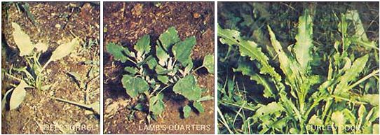
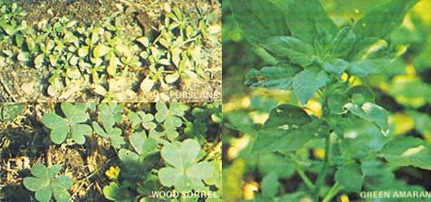

Ever since the late Euell Gibbons' first book-Stalking the Wild Asparagus-came off the press in 1962, more and more people have taken to the backwoods to forage everything from Jerusalem artichokes to wild wintergreen. Surprisingly enough, however, it's not at all necessary to hike hither and yon to start reaping nature's bountiful harvest of volunteer vegetables. Fact is, you needn't took further than your own backyard (in most cases) to find plenty of free eats.
I was made aware of this simple truth one day when-after hours of hoeing and pulling-I hauled a wheelbarrow full of stout, leafy weeds away from my garden.
"Hey there!" my Latvian-born neighbor called from his yard. "Where're you going with all those plants?"
"To the trash bin."
"But that whole barrow load is good to eat!" the man declared. "
Good to eat ?"
"Yes. In the old country, we used the leaves as soup greens."
My neighbor didn't know the plant's English name, nor did I. But a little research soon taught me that the persistent, branching "weed" I'd just uprooted from the vegetable patch in bushel quantities was actually lamb's-quarters . . . a delicious green I've since come to savor as much as any cultivated plant in the garden.
Since that incident, I've gone on to discover an array of tasty vegetables in my backyard which-until recently-i didn't even know were there! And the nice thing about these free eats is that they require no fertilizer or special care . . . and they grow without my having to sow a single seed. (Naturally . . . they're weeds!)
Chances are, your backyard, lawn, or garden is well stocked with these free edibles too. So come with me, and I'll show you how to find-and prepare-some of the more common species of "good to eat" weeds.
Lamb's-quarters-also known as pigweed, goosefoot, and wild spinach-is a relative of spinach and one of the most widely distributed plants on earth. In years gone by, both Europeans and American Indians cultivated this leafy annual for its abundant yield of seeds (seeds which-incidentally-contain an average of 16% protein, compared to wheat's 14%).
As a green, however, lamb's-quarters is delicious. And surprisingly nutritious . . . for the uncooked plant happens to be richer in iron, protein, and vitamin B 2 than either raw cabbage or raw spinach.
Mature lamb's-quarters stands two to seven feet tall and can be identified by its jagged-edged, diamond-shaped leaves . . . leaves which-on their undersides-are powdered with coarse, whitish particles (hence the Latin name album, or "white"). The short leafstalks may either be reddish-streaked or plain green. (Both the stem and leaves of young plants are usually just mealy white.)
While only the tender, growing tips of mature Cheno podium album are mild enough to eat, every part of the plant from the ground up is tasty when taken from lamb's-quarters less than a foot tall.
Some folks like to use this green in salads, but I prefer mine cooked as a substitute for spinach. (It's especially delectable when creamed, I might add.) Lamb's-quarters is also quite toothsome when wilted in hot dressing, as follows:
Fry one small, diced onion in 1/2 cup of salad oil. Then (after first checking to make sure the oil isn't hot enough to "splash") add 1/4 cup vinegar, 1/4 teaspoon salt, and-if desired-pepper to the frying pan. Throw in four cups of lamb's-quarters, stir-fry until limp . . . and eat with pleasure.
Once you've tried Chenopodium album- either cooked or raw-you'll know why pigs chomp happily away on all of this weed that they can sink a tooth into!
A milder-tasting relative of lamb's-quarters that can be prepared in the same manner is green amaranth . . . also known as redroot, wild beet, and (coincidentally) pigweed. Euell Gibbons has labeled this hardy native of tropical America "among the most common of all weeds".
You'll recognize green amaranth by three main features: [1] a stout, hairy stem, [2] rough-to-the-touch, pointed oval leaves borne on stalks almost as long as the leaves themselves, and [3] a crimson-colored root (hence the names red root and wild beet). The height of the plant varies. I've personally harvested a six-footer with a stem thicker than some baseball bats! Usually, however, the mature plant grows no more than three feet tall.
While some authors suggest ways of preparing raw amaranth leaves, I recommend that you only eat the leaves after they've been cooked, due to the fact that the foliage contains a substance called saponin. Used commercially as a foaming agent in fire extinguishers, beers, etc., saponin gives the raw leaves of green amaranth an odd taste and-because of its detergent-like properties-can cause digestive upsets.
Fortunately, brief cooking will serve to [1] drive saponin out of the plant's leaves, and [2] create a vitamin-rich vegetable side dish that's sure to please the most fastidious palate. (Because the plain, cooked greens have a very delicate flavor, you may wish to serve them with a stronger-tasting vegetable-such as curled dock-or with a cheese sauce.)
Boiled, wilted, fried, creamed, or steamed . . . green amaranth is an uncommonly delicious "find".
If you want a weed that you can safely eat raw, try purslane.
A native of southern Asia, pussley -as some folks call it-is at present widely cultivated throughout Europe and the Orient for use as a salad green and potherb. In America, however, relatively few gardeners have discovered how tasty-and nourishing-this small, ground-hugging plant can be.
Although purslane rarely grows taller than two inches, it can-and will!-quickly spread its fleshy, reddish-purple stems and paddle-shaped leaves over a large portion of one's garden. Which is probably just as well, since all above-ground parts of this iron- and calcium-rich semi-succulent are edible. (Harvest only the tender, growing tips, though, if you want to keep your purslane productive all summer long.)
The leaves or tips add a welcome and slightly acidic flavor to salads. In addition, the foliage is delectable either boiled or fried in butter with salt or pepper.
The texture of purslane is somewhat gooey or mucilaginous. If you find this disagreeable, try [1] dipping the plant In a beaten egg, [2] rolling it in a mixture of bread crumbs and flour, and then [3] frying the vegetable until it's brown. The glutinous quality of the leaves is rendered unnoticeable by the procedure. (I should add that this same "gooey" quality makes pussley a good substitute for okra in soups, sauces, and most any recipe calling for a thickener.)
You may wish to take advantage of purslane's rich yield of seeds-up to 50,000 per individual plant-for use in breads, biscuits, pancakes, etc. To collect the seeds, simply pick some plants before their pods have fully ripened, lay them out to dry for two weeks on a sheet of plastic film, thrash the dried pussley, and-finally-winnow out the myriad tiny, black seeds.
The docks are some of the hardiest, most widespread, most persistent weeds found anywhere. (Pull one out of the ground-if you can!- and you'll soon find that it's been replaced by two more.) And docks are found practically anywhere: alongside streams and roads and driveways, in pastures and vacant lots and gardens . . . in short, wherever you'd expect a weed to grow!
Of the 15 Rumex species called docks, all are edible. None, however, is as well known-or as savory-as curled dock (synonyms: narrow-leaved dock and yellow dock). The plant's name refers to the fact that its slender, lance-shaped leaves-most of which sprout directly from the ground-have wavy edges. Often, these leaves reach two feet or more in length . . . while the weed's spindly flower stalks grow to a height of four or five feet before they bear small, green blossoms.
Curled dock's glossy foliage is unusually flavorful ... often (especially if the leaves are more than a foot long) to the point of tasting bitter. There are two ways of dealing with this unpalatable pungency.
The first is to boil the plant through two waters. (In other words, place the leaves in cold water in a pan, bring to a boil, drain the hot water off, and-after adding more liquid to the container-cook the foliage until it's tender.) Yes, by doing this you are pouring valuable vitamins down the drain . . . but the steaminghot greens that remain in the pan are-in my estimation-among the best-tasting of all wild vegetables. As a result, I make up for the lost nutrients by eating more leaves than I would if they tasted bitter!
A second effective way to rid dock leaves of their astringency is to cream them. To do this, simply [1] mix a tablespoon of flour with a tablespoon of melted butter in a pan, [2] add two cups of chopped dock leaves and 1/2 cup of milk to the butter-flour paste, and [3] cook-stirring constantly-until the sauce thickens. The result: a gourmet's delight, without the "bite".
A close relative of curled dock-and a frequent inhabitant of neglected gardens-is sheep sorrel (also known as sourgrass).
While it's true that the light-green, arrowhead-shaped leaves of sourgrass are a bit acid-tasting (due to the presence of potassium oxalate) and shouldn't be eaten in excess . . . don't let this keep you from upping the "zip factor" of your salads, soups, and other dishes with small amounts of sheep sorrel foliage. (Place a few leaves of acetosella- literally , "small vinegar plant"-in a salad and you can omit the vinegar from your dressing!)
Sheep sorrel's crisp tartness makes it the perfect accompaniment to fish. Verify this for yourself by including some chopped sourgrass leaves in your favorite seafood sauce . . . or-the next time you bake a whole, stuffed fish-add a small quantity of sorrel to the stuffing mix.
Sheep sorrel also may be substituted for rhubarb in pie recipes. All you have to do is cook the sorrel leaves, combine them with the remaining recipe ingredients, and pour the resulting mixture into a pie shell. Then top with a layer of crust, pop the whole thing into the oven, and bake according to the recipe's directions.
Another sheep sorrel dish-puree-goes back many years. The dateless instructions I use say to [1] boil three pounds (quite a sackful!) of the leaves until tender, [2] drain them, [3] press the cooked foliage through a sieve (if you have a blender, simply whiz the leaves-with a little water, if necessary-until they're smooth), [4] pour the pureed greens into a saucepan containing two tablespoons of butter, and [5] simmer-while stirring-for 10 minutes. Finally, add more butter-or milk or cream-as desired, and salt and pepper to taste.
This fragile plant-held by some to be a descendant of the original shamrock-grows in shady areas alongside houses and fences, and can be recognized by its familiar triple-lobed, clover-shaped leaves. (Unlike clover, however, the lobes of wood sorrel's leaves are heart-shaped.) Most of the dozen species of Oxalis known as "wood sorrel" bear yellow flowers (see photo), while some have white blossoms and others have violet- or pink-petaled blooms. Regardless of the species, the pointed seedpods of wood sorrel are always good for a refreshing, lemony nibble on a hot summer day.
Wood sorrel (as you might expect from the name "sorrel", meaning "sour") is similar in taste to sheep sorrel . . . thus, you can replace one plant with the other in many recipes. However, because the wood sorrel's stem can be stiff and hard to chew-even after cooking-you'd be well advised to harvest only the leaves from Oxalis species.
You'll find that raw wood sorrel leaves add a delightful flavor to sandwiches, and that the shamrock-like foliage makes a decorative and tasty garnish.
You can use any of the plants described in this article-alone or mixed-as soup greens or the base for a puree. And it's no chore to store the wild edibles for year-round use: All you have to do is [1] blanch the greens by placing them in a small amount of boiling water for two minutes, [2] cool the foliage quickly in pre-chilled water, and [3] pack the victuals into airtight containers before [4] putting them in the freezer.
Give lamb's-quarters or redroot or purslane or curled dock or either of the sorrels described here a try. (Add an extra measure of nutrition to your meals and watch your grocery bill go down at the same time!) I think you'll find that it makes good sense to stop thinking of garden weeds as ornery pests and begin accepting them for what they (in many cases) really are: no-work, natural, free-for-the-pickin' food.
[1] DON'T ever put a plant to your lips or tongue until you've positively identified-and determined the edibility of-the weed in question with the aid of a guidebook or an experienced forager. When in doubt, take the plant to your county agricultural agent for identification.
[2] DON'T depentd on general rules of thumb (regarding color, shape, milky sap, etc.) to determine a plant's edibility or non-edibility.
[3] DON'T pick wild food from areas that might have been sprayed with herbicides, pesticides, or chemicals not meant for use on edible vegetables. (Hint: Wash whatever you eat before you eat it.) .
[4] DON'T forage too close to roadways, where lead from auto exhausts may have contaminated the soil to a dangerous extent. Consider a 25-foot separation between plant and highway to be a bare minimum, and try-if possible-for 50 to 100 feet of separation. (Similarly, don't forage in areas which are likely to contain pollution . . . such as near factories, chemical dumping grounds, or effluent-tainted waterways.)
[5] Finally, DON'T let the above warnings frighten you out of experimenting with wild foods. Instead, remember that if you [A] gather your foliage in a safe place and [B] positively identify your plants, there's nothing to fear. Become a weed stalker and you'll soon understand more about the natural world than just which plants are edible. What better way is there to become acquainted with Mother Nature, than to eat from her hand?
|
 |
 |
|